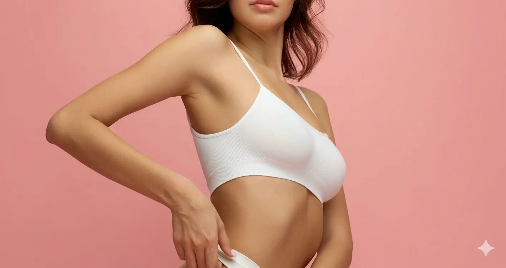

Breast Augmentation Surgery
Enhance your natural beauty with personalized breast augmentation that complements your unique body proportions.
What is Breast Augmentation?
Breast augmentation is a surgical procedure designed to enhance the size and shape of your breasts. We offer two advanced options include premium-quality silicone implants or natural fat grafting for a completely organic approach. The procedure is customized to your specific goals, whether you're looking for cubtle enhancement or more noticeable results.
- Personalised implant or fat grafting selection
- Advanced surgical techniques
- Natural-looking outcomes

Augmentation Methods
Breast Implants
Premium silicone implants designed for optimal safety and aesthetics. Offers significant volume enhancement with predictable, long-lasting results.
- Significant volume increase
- Wide range of sizes
- Long-lasting results
- Predictable outcome
Fat Grafting
Natural autologous fat transfer harvested from your own body. Creates beautifully soft, natural-feeling results with added body contouring benefits.
- 100% natural results
- Soft, natural texture
- No foreign material
- Body contouring benefit
Benefits of Breast Augmentation
Increased Confidence
Feel more confident in everyday life and clothing.
Improved Proportions
Achieve better body balance and silhouette.
Natural Results
Modern techniques for refined outcomes.
The Procedure
Consultation
Discuss goals and select suitable implant or technique.
Surgery
Implants placed using precise surgical techniques and through a discreet incisions.
Recovery
Resume light activity within a week. Full results are visible after 4-6 weeks as swelling subsides.
Results
Enjoy your beautifully enhanced silhouette that looks and feels natural, with results that can last many years.